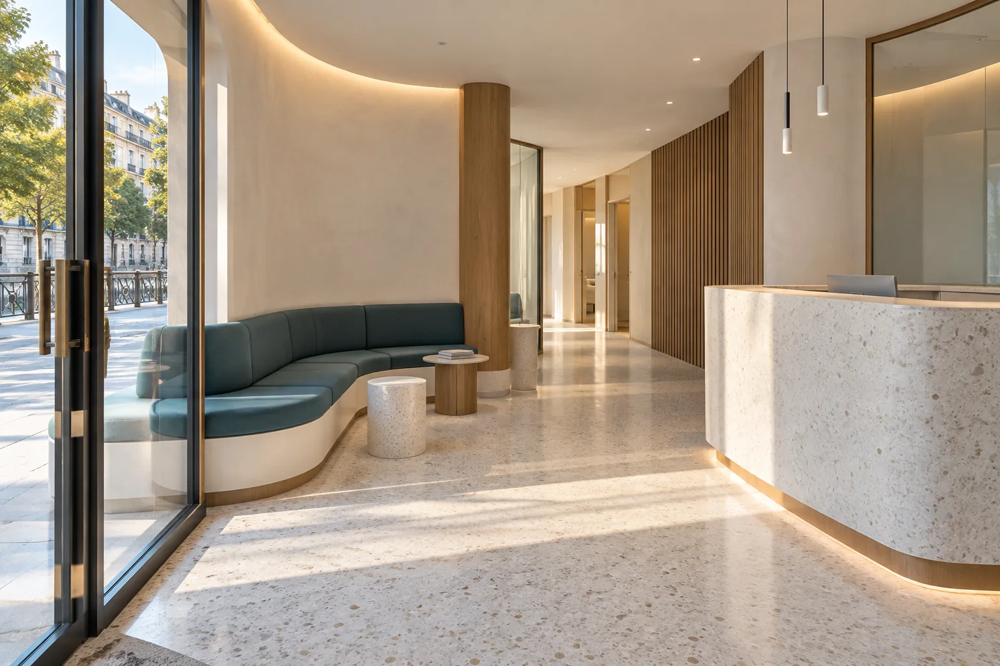

Piel y uñas
Las durezas, las rozaduras o las molestias en las uñas pueden hacer incómodo algo tan cotidiano como caminar. Una valoración ayuda a identificar qué ocurre y cómo cuidarlo.
Tus pies te acompañan cada día. Si notas dolor, molestias al caminar o cambios en la piel o las uñas, prestarles atención a tiempo puede ayudarte a seguir moviéndote con comodidad.

Caminar, trabajar, hacer deporte o simplemente estar de pie: los pies participan en casi todo. Una consulta podológica puede ayudarte a entender qué les ocurre y cómo cuidarlos mejor.
Cada persona llega con una historia distinta: una molestia al caminar, una uña que incomoda o dudas sobre su pisada. Contar cuándo aparece el problema y cómo afecta a tu rutina ayuda a orientar la consulta.
Conoce más sobre podologíaLa podología se ocupa de la salud de los pies y de las molestias que pueden afectar a tu forma de caminar. Una valoración individual ayuda a comprender el problema y a decidir qué cuidados pueden venirte bien.
Las durezas, las rozaduras o las molestias en las uñas pueden hacer incómodo algo tan cotidiano como caminar. Una valoración ayuda a identificar qué ocurre y cómo cuidarlo.
La forma de apoyar el pie influye en cómo te mueves. Cuando hay dolor o incomodidad al caminar, estudiar la pisada puede ayudar a orientar las opciones de cuidado, incluidas las plantillas cuando proceda.
Contenido orientativo sobre podología. Consulta con la clínica qué servicios ofrece actualmente.
Cuéntanos qué te preocupa: una molestia al caminar, un problema en las uñas o una duda sobre el cuidado de tus pies. Por teléfono puedes consultar la disponibilidad y encontrar un momento para venir.
Llamar al 943 32 69 71Cuéntanos qué notas y desde cuándo te ocurre.
Pregunta por la atención que necesitas y los horarios disponibles.
Elige el momento que mejor encaje contigo.
Una molestia que vuelve, dolor al apoyar o cambios en las uñas son buenos motivos para pedir una valoración. Entender qué pasa es el primer paso para encontrar la atención adecuada.
Hablemos de tus piesUsandizaga Kalea, 20
20002 Donostia / San Sebastián
Llama al 943 32 69 71 y cuéntanos qué necesitas. Así podrás consultar la disponibilidad y acordar una cita.
En Usandizaga Kalea 20, 20002 Donostia, en el barrio de Gros. Puedes abrir la ruta desde esta página.
Llámanos antes de venir y te diremos los horarios disponibles.
Llama para confirmar si la clínica puede atender tu motivo de consulta y encontrar un momento para acudir a Usandizaga 20.